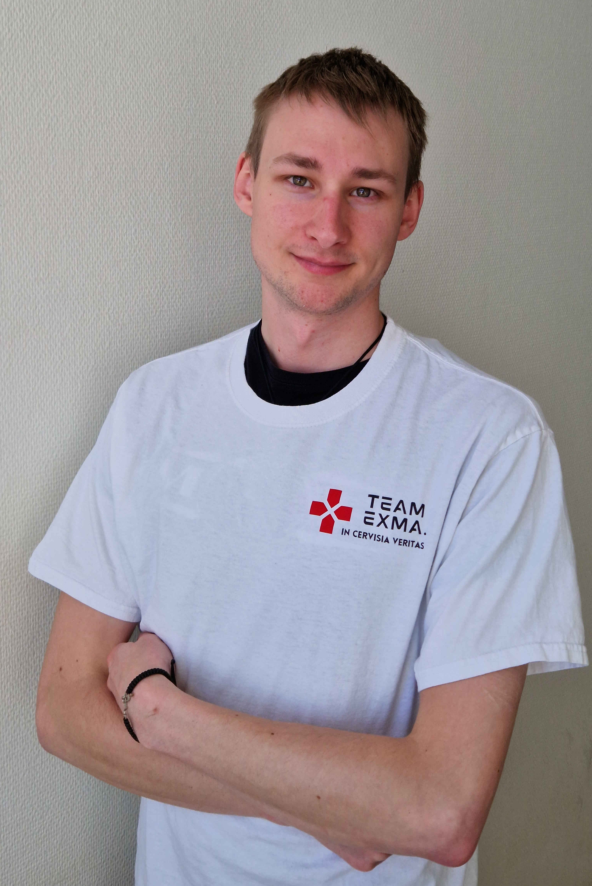
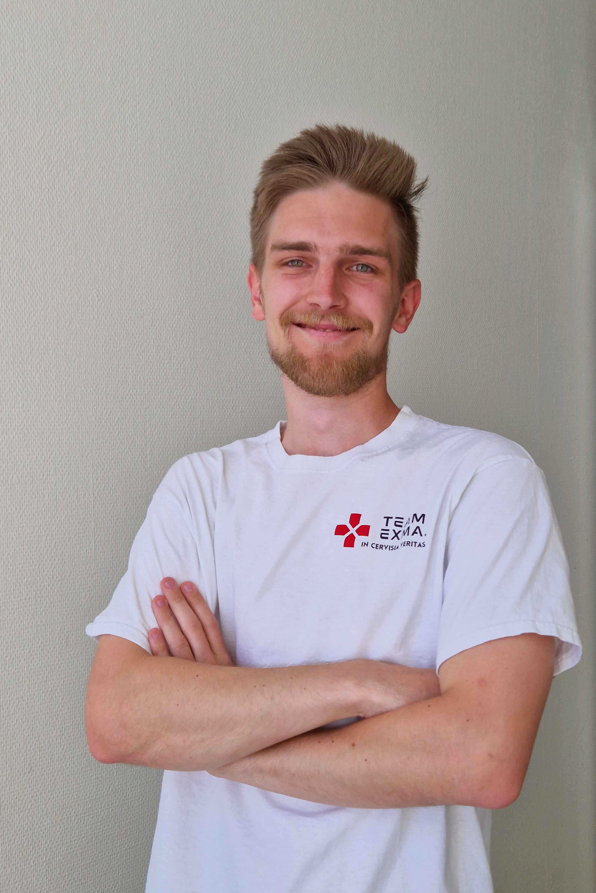
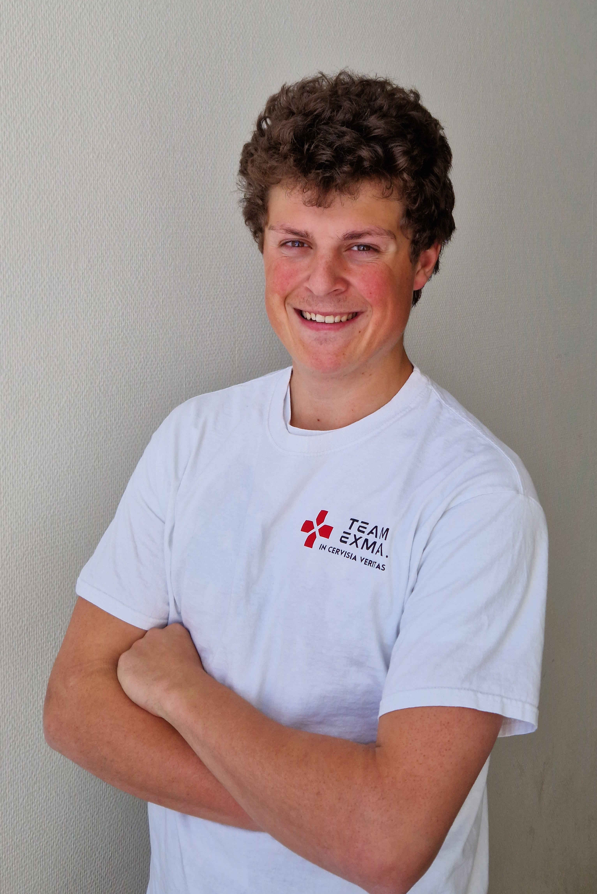

Teambeschreibung:
Teammitglieder:

Christian Herczegh (Projektleiter)
Christian ist schon seit Anfang an im Team Exma. Mitglied und die treibende Kraft in der Projektleitung.

Jan Bradler (Entwicklungs-Chef)
Jan ist das Herz und die Seele unserer technischen Entwicklung und sorgt für innovative und nachhaltige Technologien.

Jonas Metschl (Dokumentation und Marketing)
Jonas gibt den einzelnen Projekten eine dokumentarische Substanz und sorgt mit seinen Marketingideen für eine Chance am regionalen Markt.